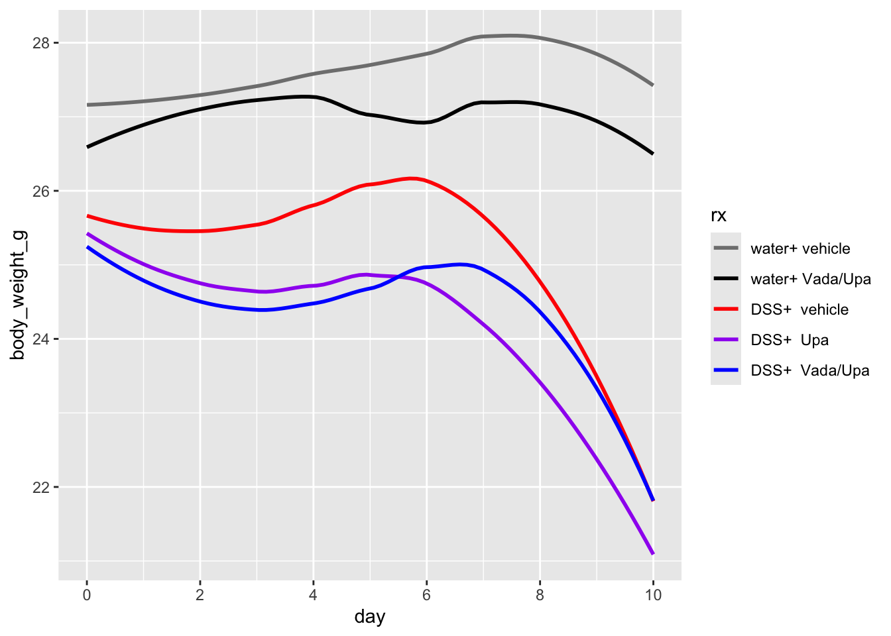
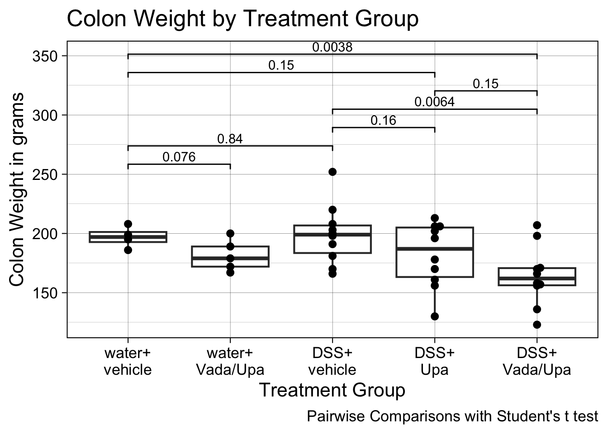
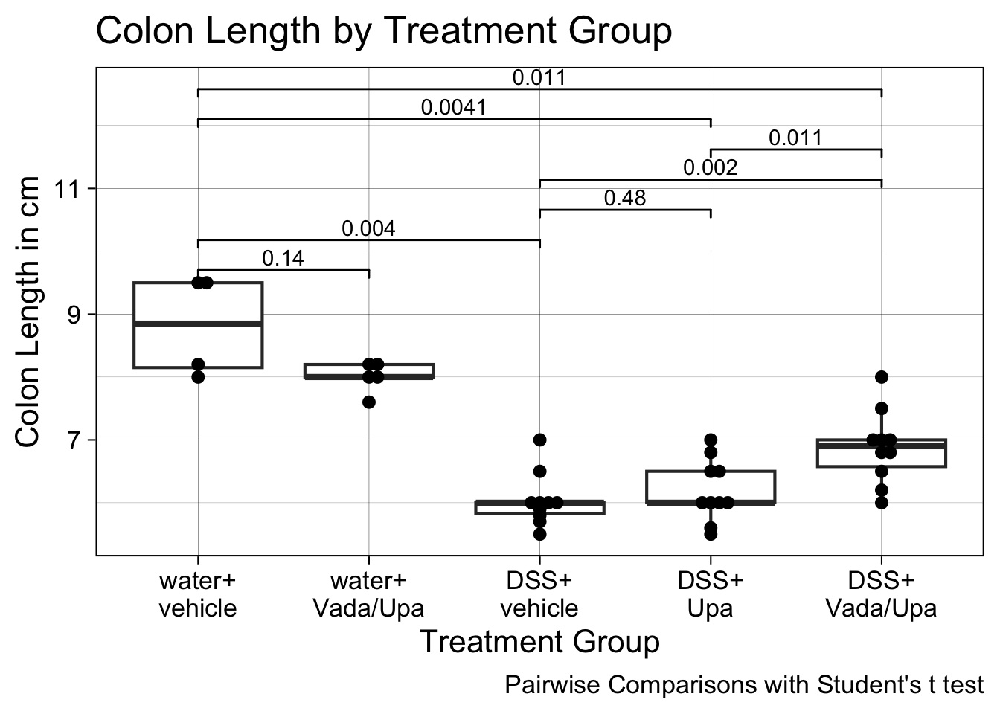
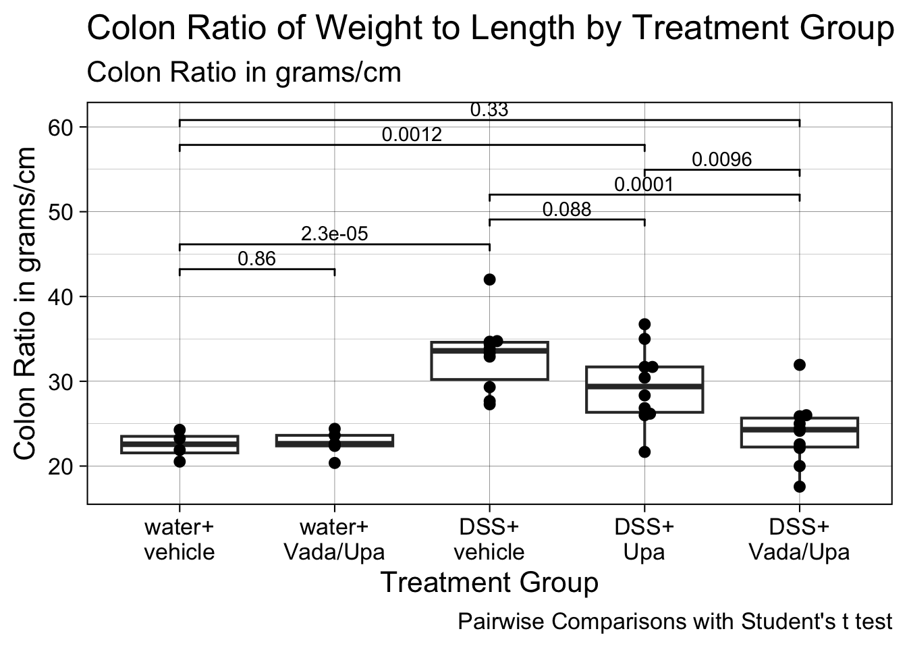
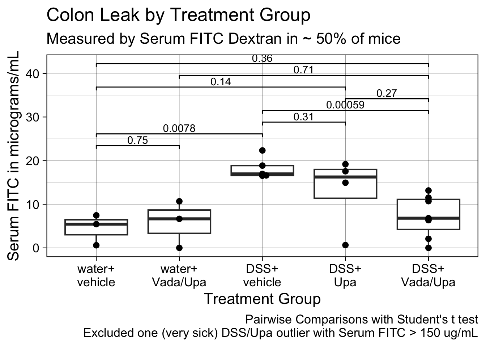

Code
library(tidyverse)
library(readxl)
library(janitor)
library(ggbeeswarm)
library(scales)This experiment was performed to test the treatment of DSS colitis with Upa alone vs. Upa/Vada.
This experiment used DSS in water at 3% for 8 days, rather than the planned 7, because the mice were slow to develop rectal bleeding. This led to only only one day of rest on regular drinking water.
Each arm of the study included C57BL6 male mice, 5 or 10 per group.
Drug treatment with Upa and/or Vada started on Experiment day 0, the day before DSS started (DSS was started on Day 1).
The groups were:
library(tidyverse)
library(readxl)
library(janitor)
library(ggbeeswarm)
library(scales)Final data are from day 10 (sac day).
Daily data by mouse are from day 0 to day 10
dat <- readxl::read_xlsx("tidy data for vada-upa experiment2.xlsx") |>
clean_names() |>
mutate(rx = factor(rx, ordered = TRUE,
levels = c("water+ vehicle", "water+ Vada/Upa",
"DSS+ vehicle", "DSS+ Upa",
"DSS+ Vada/Upa"))) |>
rename(ear_tag = mouse)
dat_daily <- readxl::read_xlsx("BW blood data daily.xlsx") |>
janitor::clean_names() |>
mutate(mouse = as.factor(mice)) |>
mutate(ear_tag = as.factor(ear_tag)) |>
select(-mice) |>
relocate(mouse)
dat |> select(ear_tag, rx) |>
mutate(ear_tag = as.factor(ear_tag)) ->
dat2
dat_daily|>
left_join(dat2, by = join_by(ear_tag)) ->
daily2
fitc1 <- read_xlsx("serum FITC (corrected).xlsx") |>
janitor::clean_names() |>
select(1:3) |>
slice(1:23) |>
rename(ear_tag = name) |>
mutate(ear_tag = as.factor(ear_tag))
fitc1[4,3] <- 0
fitc1[19,3] <- 0
fitc2 <- left_join(fitc1, dat2)daily2 |>
ggplot(aes(y = body_weight_g, x = day,
group = mouse, color = rx)) + scale_color_manual(values = c("gray50", "black", "red", "purple", "blue")) +
scale_x_continuous(breaks = seq(0,10, by=2)) +
#geom_line() +
#geom_point() +
geom_smooth(aes(group = rx), se = FALSE)
Findings:
Note no stool blood in the controls, and minimal delay in the onset and severity of stool blood with Upa, but noticeably delayed blood when Vada was added to Upa.
daily2 |>
ggplot(aes(y = stool_blood, x = day,
group = mouse, color = rx)) +
#geom_line() +
#geom_point() +
geom_smooth(aes(group = rx), se = FALSE) +
scale_color_manual(values = c("gray50", "black", "red", "purple", "blue")) +
scale_x_continuous(breaks = seq(0,10, by=2)) +
labs(color = "Treatment",
x = "Day",
y = "Stool blood (0-4)",
title = "Effect of Treatment on Smoothed Daily Mean Stool Blood Scores",
subtitle = "Vadadustat Delays Rectal Bleeding by ~ 1 Day")
Findings:
dat |>
ggplot(aes(y= colon_weight, x = rx)) +
geom_boxplot() +
geom_beeswarm() +
labs( x = "Treatment Group",
y = "Colon Weight in grams",
caption = "Pairwise Comparisons with Student's t test",
title = "Colon Weight by Treatment Group")+
ggsignif::geom_signif(comparisons = list(
c(1,2), c(1,3), c(3,4), c(3,5), c(4,5), c(1,4),
c(1,5)),
test = "t.test",
step_increase = 0.12) +
scale_x_discrete(labels = label_wrap(6)) +
theme_linedraw(base_size = 16, base_family = "Arial")
It looks like we need to control for body weight. Let’s normalize colon weight to body weight by mouse to see if this is cleaner.
# try control for bw
daily2 |>
filter(day == 10) ->
day10wt
dat |>
mutate(ear_tag = as.factor(ear_tag)) |>
left_join(day10wt) |>
select(ear_tag, rx, colon_weight, body_weight_g) |>
mutate(adj_colon_wt = colon_weight/body_weight_g) |>
ggplot(aes(y= adj_colon_wt, x = rx)) +
geom_boxplot() +
geom_beeswarm() +
labs( x = "Treatment Group",
y = "Colon Weight / body weight",
caption = "Pairwise Comparisons with Student's t test",
title = "BW-adjusted Colon Weight by Treatment Group")+
ggsignif::geom_signif(comparisons = list(
c(1,2), c(1,3), c(3,4), c(3,5), c(4,5), c(1,4),
c(1,5)),
test = "t.test",
step_increase = 0.12) +
scale_x_discrete(labels = label_wrap(6)) +
theme_linedraw(base_size = 16, base_family = "Arial")Findings:
dat |>
ggplot(aes(y= colon_length, x = rx)) +
geom_boxplot() +
geom_beeswarm() +
labs( x = "Treatment Group",
y = "Colon Length in cm",
caption = "Pairwise Comparisons with Student's t test",
title = "Colon Length by Treatment Group")+
ggsignif::geom_signif(comparisons = list(
c(1,2), c(1,3), c(3,4), c(3,5), c(4,5), c(1,4),
c(1,5)),
test = "t.test",
step_increase = 0.12) +
scale_x_discrete(labels = label_wrap(6)) +
theme_linedraw(base_size = 16, base_family = "Arial")
It looks like we need to control for body weight. Let’s normalize colon length to body weight.
# try control for bw
daily2 |>
filter(day == 10) ->
day10wt
dat |>
mutate(ear_tag = as.factor(ear_tag)) |>
left_join(day10wt) |>
select(ear_tag, rx, colon_length, body_weight_g) |>
mutate(adj_colon_len = colon_length/body_weight_g) |>
ggplot(aes(y= adj_colon_len, x = rx)) +
geom_boxplot() +
geom_beeswarm() +
labs( x = "Treatment Group",
y = "Colon Length / body weight",
caption = "Pairwise Comparisons with Student's t test",
title = "BW-adjusted Colon Length by Treatment Group")+
ggsignif::geom_signif(comparisons = list(
c(1,2), c(1,3), c(3,4), c(3,5), c(4,5), c(1,4),
c(1,5)),
test = "t.test",
step_increase = 0.12) +
scale_x_discrete(labels = label_wrap(6)) +
theme_linedraw(base_size = 16, base_family = "Arial")
Findings:
some loss of length with drug control
big loss of length with DSS
partial restoration with Upa
More length restoration with Vada/Upa, now NS difference from normal colon length
Looks more reasonable after we normalize to body weight
No need for BW adjustment.
dat |>
ggplot(aes(y= colon_density, x = rx)) +
geom_boxplot() +
geom_beeswarm() +
labs( x = "Treatment Group",
y = "Colon Ratio in grams/cm",
caption = "Pairwise Comparisons with Student's t test",
title = "Colon Ratio of Weight to Length by Treatment Group",
subtitle = "Colon Ratio in grams/cm")+
ggsignif::geom_signif(comparisons = list(
c(1,2), c(1,3), c(3,4), c(3,5), c(4,5), c(1,4),
c(1,5)),
test = "t.test",
step_increase = 0.12) +
scale_x_discrete(labels = label_wrap(6)) +
theme_linedraw(base_size = 16, base_family = "Arial")
Findings:
This makes sense.
Mice were kept NPO overnight, then given 4 kDa FITC-Dextran (Sigma : 60842-46-8) by oral gavage at a dose of 0.6 mg/g of mouse body weight in a volume of 100 microL in the morning.
Blood was sampled 4 hours later, and serum was separated.
From a 150 mg/mL stock solution of 4 kDa FITC-Dextran, we used 4.27 microL, and added FITC negative mouse serum to bring this up to 1 mL, to produce a max solution of 640 micrograms/mL, then made serial 2 fold dilutions for the standard curve.
The blank control was made with 25 microL of FITC negative serum and added 75 microL of saline,
Fluorescence was induced with a 488 nm excitation laser through a 480 nm +/- 20 nm filter, and emissions were read at 508 nm +/- 20 nm to capture the 525 nm peak, and the detector gain was set at 35.
fitc2 |>
filter(fitc_ug_ml <100) |>
ggplot(aes(y= fitc_ug_ml, x = rx)) +
geom_boxplot() +
geom_beeswarm() +
labs( x = "Treatment Group",
y = "Serum FITC in micrograms/mL",
caption = "Pairwise Comparisons with Student's t test\nExcluded one (very sick) DSS/Upa outlier with Serum FITC > 150 ug/mL",
title = "Colon Leak by Treatment Group",
subtitle = "Measured by Serum FITC Dextran in ~ 50% of mice")+
ggsignif::geom_signif(comparisons = list(
c(1,2), c(1,3), c(3,4), c(3,5), c(4,5), c(1,4),
c(2,5), c(1,5)),
test = "t.test",
step_increase = 0.12) +
scale_x_discrete(labels = label_wrap(6)) +
theme_linedraw(base_size = 16, base_family = "Arial")
Findings:
Makes sense - Upa does not have a significant effect on FITC, while Vada normalizes FITC.
Two distinct mechanisms
dat |>
ggplot(aes(y= spleen_wt_bw, x = rx)) +
geom_boxplot() +
geom_beeswarm() +
labs( x = "Treatment Group",
y = "Spleen to Body Weight Ratio",
caption = "Pairwise Comparisons with Student's t test",
title = "Spleen to Body Weight Ratio by Treatment Group") +
ggsignif::geom_signif(comparisons = list(
c(1,2), c(1,3), c(3,4), c(3,5), c(4,5), c(1,4),
c(1,5)),
test = "t.test",
step_increase = 0.12) +
scale_x_discrete(labels = label_wrap(6)) +
theme_linedraw(base_size = 16, base_family = "Arial")Findings:
dat |>
ggplot(aes(y= day10_dia, x = rx)) +
geom_boxplot() +
geom_beeswarm() +
labs( x = "Treatment Group",
y = "Day 10 Disease Activity Index",
caption = "Pairwise Comparisons with Student's t test",
title = "Day 10 DAI by Treatment Group") +
ggsignif::geom_signif(comparisons = list(
c(1,2), c(1,3), c(3,4), c(3,5), c(4,5), c(1,4),
c(1,5)),
test = "t.test",
step_increase = 0.12) +
scale_x_discrete(labels = label_wrap(6)) +
theme_linedraw(base_size = 16, base_family = "Arial")Warning: Computation failed in `stat_signif()`.
Caused by error in `if (p_value < .Machine$double.eps) ...`:
! missing value where TRUE/FALSE neededFindings:
dat |>
ggplot(aes(y= day7_stool_bleeding, x = rx)) +
geom_boxplot() +
geom_beeswarm() +
labs( x = "Treatment Group",
y = "Day 7 Stool Bleeding Score",
caption = "Pairwise Comparisons usiing Student's t Test\nToo many ties to calculate several p values",
title = "Day 7 Stool Bleeding Score by Treatment Group")+
ggsignif::geom_signif(comparisons = list(
c(1,3), c(2,3), c(3,4), c(3,5)),
test = "t.test",
step_increase = 0.12) +
scale_x_discrete(labels = label_wrap(6)) +
theme_linedraw(base_size = 16, base_family = "Arial")Warning: Removed 1 row containing non-finite outside the scale range
(`stat_boxplot()`).Warning: Removed 1 row containing non-finite outside the scale range
(`stat_signif()`).Warning: Removed 1 row containing missing values or values outside the scale range
(`geom_point()`).Findings:
In this DSS colitis model, we saw weight loss, bleeding, and short, thick colons as expected in the DSS arm. The drug control arm had minimal weight loss, no bleeding, and no other changes.
Upa alone did not improve weight loss, with minimal effects on bleeding and FITC leak. There was partial improvement in BW-adjusted colon weight, BW-adjusted length, colon weight/length ratio, and spleen size.
The combination of Vada with Upa improved weight loss modestly, delayed bleeding by about 1 day, and significantly improved FITC leak back to near normal. There was more improvement in BW-adjusted colon weight, BW-adjusted length, colon weight/length ratio, all of which returned to near-normal (NS). The spleen size also improved more than with Upa alone, but did not return to normal.
We are continuing to examine: